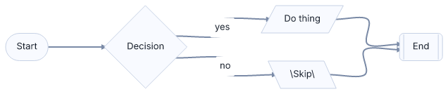
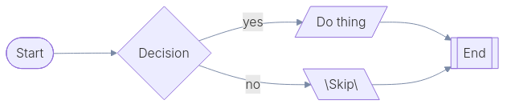
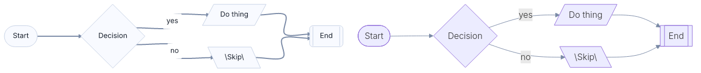
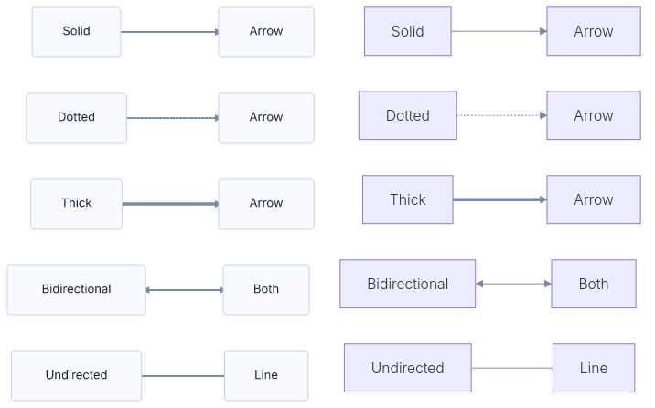
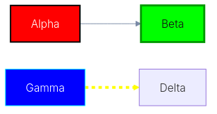
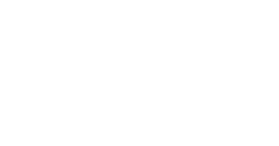
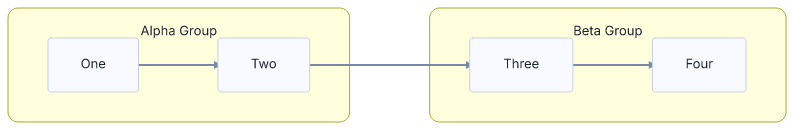
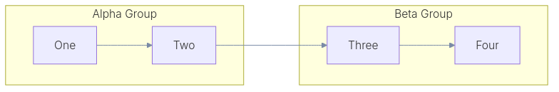
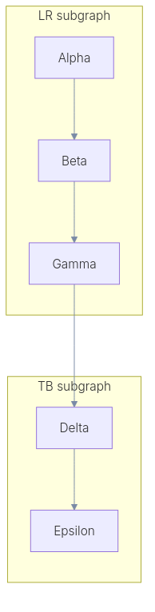
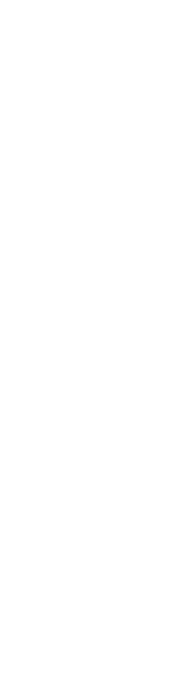

| Fixture | Status | Mean | RMS | mmdr | mmdc | diff | side-by-side |
|---|---|---|---|---|---|---|---|
| basic.mmd | ok | 5.73 | 18.98 |  |  |  | |
| edges.mmd | ok | 6.90 | 19.57 |  |
 |
 |
 |
| styles.mmd | ok | 9.82 | 36.16 |  |
 |  |  |
| subgraph.mmd | ok | 7.48 | 21.18 |  |  |  |
 |
| subgraph_direction.mmd | ok | 8.00 | 21.39 |  |
 |  |  |